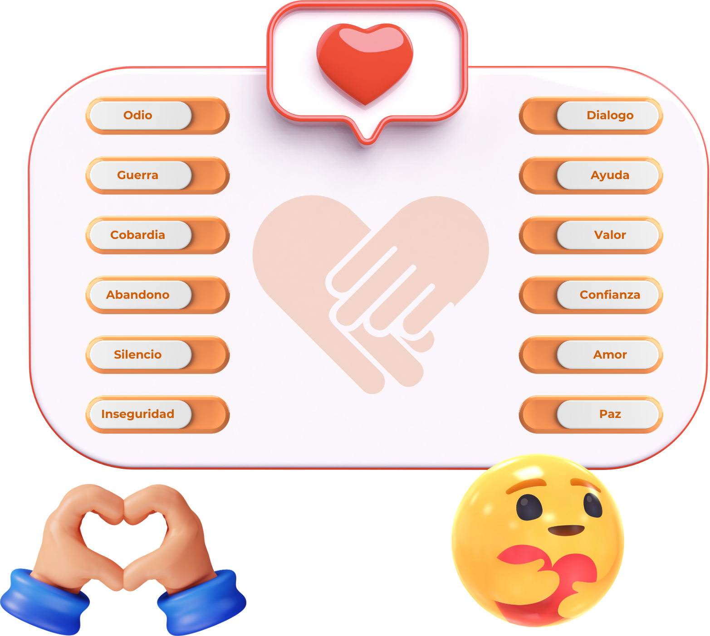

Vamos a identificar los valores buenos con su anti-valor respectivo, para esto, te invitamos a unir un valor
con su anti-valor correspondiente. Pero, sin hacer que se toquen las líneas y cuidando no pasar por los
obstáculos (los dibujos de alrededor).
